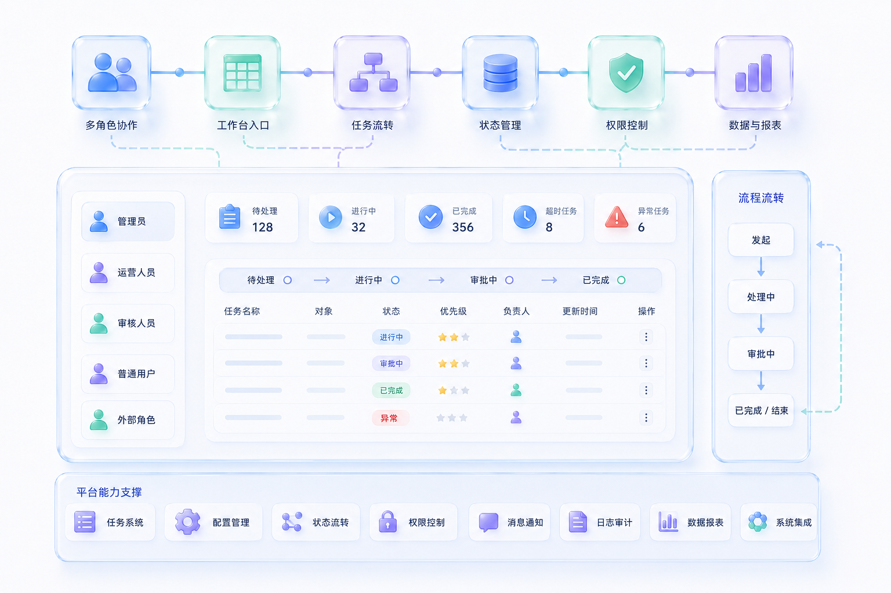

The core challenge of complex platforms usually comes from scattered business rules, complicated role permissions, long task paths, and frequent state changes.
My design focus is to break complex business systems into understandable structures, then translate them into clear information architecture, page layouts, operation paths, and workspace experiences.
Complete Platform Experience Chain
In the design process, I build the complete platform experience chain around business objects, role permissions, task workflows, and state feedback.
Through business process mapping, object relationship breakdown, permission boundary definition, state system design, and exception scenario analysis, complex rules can become stable page structures and operation mechanisms.
The system must carry real business complexity while keeping users clear, efficient, and in control during high-frequency operations.
Lowering Cognitive Load
The key to complex platform design is reducing cognitive load.
After users enter the system, they need to clearly see the tasks, data, states, and operation entries related to them.
Through task systems, configuration systems, approval flows, batch actions, filtering and search, permission control, and data feedback, the platform can move from feature stacking toward an ordered workflow.
Complex Business Scenarios
This kind of design is especially suitable for enterprise backends, operations platforms, review systems, configuration platforms, task management systems, and Enterprise SaaS.
When facing complex businesses, I pay closer attention to whether the system structure is stable, page hierarchy is clear, workflows are traceable, permissions are easy to understand, and the platform can keep expanding.
The final goal is to make complex systems clear and usable, make team collaboration more efficient, and allow the platform to grow continuously with the business.
Suitable Scenarios
Enterprise backends, operations platforms, configuration platforms, review systems, task management systems, workflow management systems, permission systems, multi-role collaboration platforms, and Enterprise SaaS.
Deliverables
Business process mapping, information architecture design, workspace design, role and permission design, task workflow design, state system design, configuration system design, low-fidelity / high-fidelity prototypes, design specifications, and interaction notes.